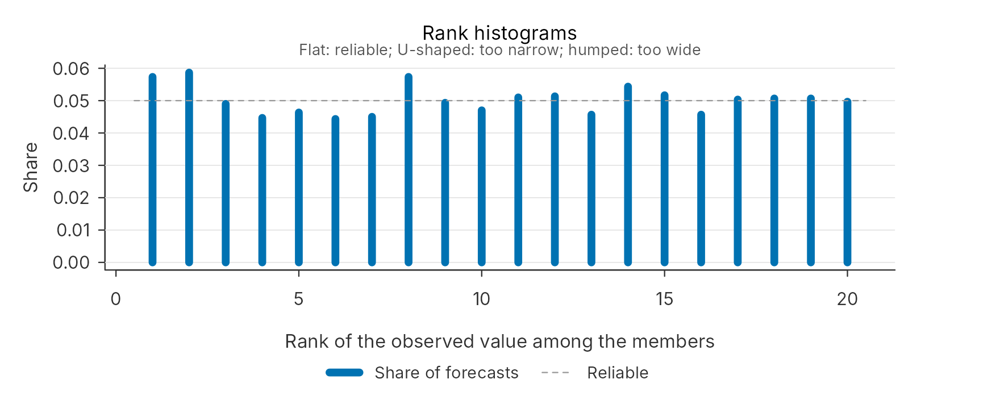
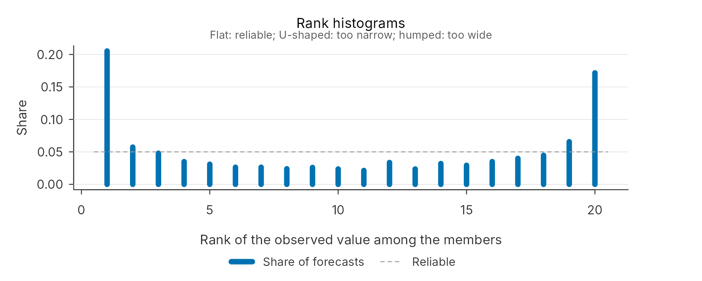
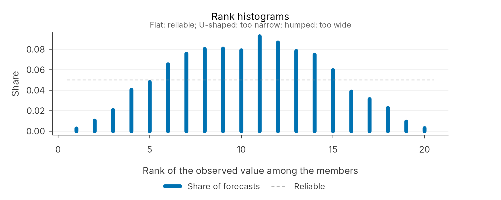
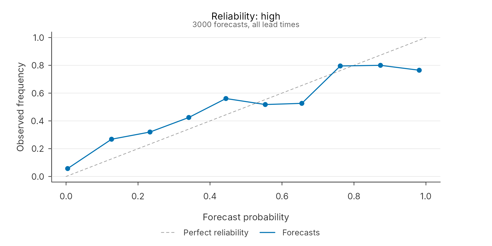

Is a probability forecast honest? Ensemble verification
pdmS7 documentation
Source:vignettes/ensemble-verification.Rmd
ensemble-verification.RmdAn ensemble forecast gives many possible futures; from them comes a probability, such as a 30% chance of the river crossing its warning threshold. That is only useful if it is honest: of all the times it says 30%, the river should cross about 30% of the time. A forecast that says 30% when the truth is 60% misleads the duty officer as surely as a wrong number. This article covers the scores that check it, first on ensembles whose honesty is known, then on a model’s.
The CRPS: the whole forecast against what happened
The continuous ranked probability score compares the whole spread of the ensemble with the observed value. For members X and X’ and observation y:
The first term rewards members close to what happened; the second credits the ensemble for admitting uncertainty, so a wide ensemble is not punished merely for being wide. It is in the units of the flow, 0 is perfect, and for a single member it is the absolute error.
crps_ensemble(matrix(c(0, 1), nrow = 1), 0) # members 0 and 1, observed 0
#> [1] 0.25
crps_ensemble(matrix(c(0, 1), nrow = 1), 0, fair = TRUE)
#> [1] 0With members 0 and 1 and the river at 0: the members are on average 0.5 away, and on average 0.5 apart over all four ordered pairs, so the CRPS is 0.5 - 0.25 = 0.25. The fair form (Ferro, 2014) averages the second term over distinct pairs only, which removes a penalty small ensembles otherwise carry.
The Brier score: thresholds
For a threshold, the forecast probability is the share of members above it. The Brier score is the mean squared difference between that probability and what happened (1 if the river crossed, 0 if not). Murphy’s decomposition splits it into three parts:
- reliability: how far each forecast probability lies from how often the event then happened; lower is better;
- resolution: how far those frequencies differ from the event’s overall frequency; higher is better, since a forecast that always says the average resolves nothing;
- uncertainty: the variance of the event itself, which no forecast can change.
b <- brier_score(c(0.9, 0.9, 0.1, 0.1), c(1, 0, 0, 0))
unlist(b[c("brier", "reliability", "resolution", "uncertainty")])
#> brier reliability resolution uncertainty
#> 0.2100 0.0850 0.0625 0.1875Two forecasts of 90%, of which one came true, and two of 10%, of which none did: the 90% was too high (it happened half the time) and the 10% too high as well (it never happened). The score of 0.21 is exactly the reliability, 0.085, less the resolution, 0.0625, plus the uncertainty, 0.1875.
Too narrow, too wide or right
Three ensembles of the same truth, with a known answer. The truth scatters about a centre with a spread of 1. A reliable ensemble scatters its members about the same centre by the same amount; a narrow one by half as much; a wide one by twice as much.
set.seed(3)
n <- 3000
centre <- rnorm(n)
truth <- centre + rnorm(n)
members <- function(s) centre + s * matrix(rnorm(n * 19), n, 19)
high <- c(high = 1.5)
scores <- rbind(right = ensemble_scores(members(1), truth, thresholds = high),
narrow = ensemble_scores(members(0.5), truth, thresholds = high),
wide = ensemble_scores(members(2), truth, thresholds = high))
scores[, c("crps", "spread_skill", "brier:high", "reliability:high")]
#> crps spread_skill brier:high reliability:high
#> right 0.5962121 1.0016848 0.08568698 0.001500991
#> narrow 0.6308894 0.5082156 0.08925023 0.006132617
#> wide 0.7220011 1.8501440 0.11006464 0.016031395spread_skill is the ensemble’s spread over the error of
its mean, adjusted for the number of members. Near 1 the ensemble is as
wide as its errors; the narrow one, at about a half, claims far more
certainty than it has; the wide one, at about two, too little. The CRPS
and the Brier score are best for the right one.
Rank histograms
For each forecast, sort the members and see where the observed value falls among them: below all of them (rank 1), between the first and second, and so on to above all of them. For an honest ensemble the observation is equally likely to fall anywhere, and the histogram of ranks is flat.
plot(ensemble_scores(members(1), truth), type = "rank")
plot(ensemble_scores(members(0.5), truth), type = "rank")
plot(ensemble_scores(members(2), truth), type = "rank")
Flat: honest. U-shaped: the observation keeps falling outside the ensemble, which is too narrow. Humped: it keeps falling in the middle, and the ensemble is too wide. A slope means the ensemble is biased high or low.
Reliability diagrams
For a threshold, group the forecasts by their probability and plot how often the event happened in each group against the probability forecast.
plot(ensemble_scores(members(0.5), truth, thresholds = high), type = "reliability")
Points on the diagonal are honest. The narrow ensemble’s points lie flatter than the diagonal: when it says 90% the event happens less often, and when it says 10%, more often. It is overconfident in both directions.
By lead time
A forecast’s honesty changes with the lead. Give
ensemble_scores() each forecast’s lead time and it scores
each lead apart, with a rank histogram for each;
plot(type = "crps") draws the CRPS, the error of the
ensemble mean and the spread against the lead. Where the spread falls
below the error, the ensemble has become overconfident.
s <- ensemble_scores(ensemble, observed, lead_h = forecasts$lead_h,
thresholds = c(warning = 45))
plot(s, type = "crps")A model’s ensemble
The Bayesian calibration of How sure are we? gives an ensemble of model runs. Run as it is, it shows the parameters’ uncertainty only; with the error model added, it should be an honest forecast of the observed flow.
rain <- synthetic_rain("2017-10-01", years = 3, dt = 1, seed = 5)
truth_cfg <- modifyList(pdm_presets("standard"), list(area_km2 = 25))
model <- pdm_from_config(truth_cfg)
forcing <- rain[c("time", "rain", "pet")]
set.seed(8)
flow <- run_pdm(model, forcing[c("rain", "pet")], initial_state(model, 0.5))$output$q_m3s
observed <- flow * exp(rnorm(length(flow), 0, 0.15))
post <- calibrate_bayes(truth_cfg, forcing, observed, lower = c(fc = 0.6, distribution.cmax = 100),
upper = c(fc = 1.4, distribution.cmax = 500),
priors = list(fc = prior_normal(1, 0.3)), generations = 800,
lambda = 0, warmup = 24 * 90, start = "soil", seed = 3)
every <- seq(24 * 90, nrow(forcing), by = 6)
runs <- function(noise) {
vapply(1:20, function(i) {
posterior_band(post, forcing, draws = 1, probs = 0.5, noise = noise, seed = i)$q50
}, numeric(nrow(forcing)))[every, ]
}
flood <- c(high = unname(stats::quantile(observed, 0.98)))
rbind(parameters_only = ensemble_scores(runs(FALSE), observed[every], thresholds = flood),
with_errors = ensemble_scores(runs(TRUE), observed[every], thresholds = flood))[
, c("crps", "spread_skill", "brier:high")]
#> crps spread_skill brier:high
#> parameters_only 0.05067232 0.01538814 0.003151579
#> with_errors 0.03752952 1.03126145 0.002490674The parameters alone give an ensemble a small fraction of the width of its errors: it would claim near certainty. With the error model its spread matches its errors and its scores improve. The same model calibrated with the Box-Cox power 0.5 instead of 0 gives a ratio near 0.6 here: on that scale the largest flows’ errors look smaller than they are, so the ensemble is too narrow exactly where warnings are decided. These checks are how to tell.
Cautions
- Score on forecasts made as they would be in service: from regular origins, with the rain that would have been forecast, at the leads the service uses.
- Small samples mislead. A rank histogram of a few dozen forecasts is noise; flood thresholds are crossed rarely, so their Brier scores need many years.
- Honest is not the same as useful. An ensemble that always forecasts the climatology is honest and resolves nothing. Look at resolution and the CRPS as well as reliability.